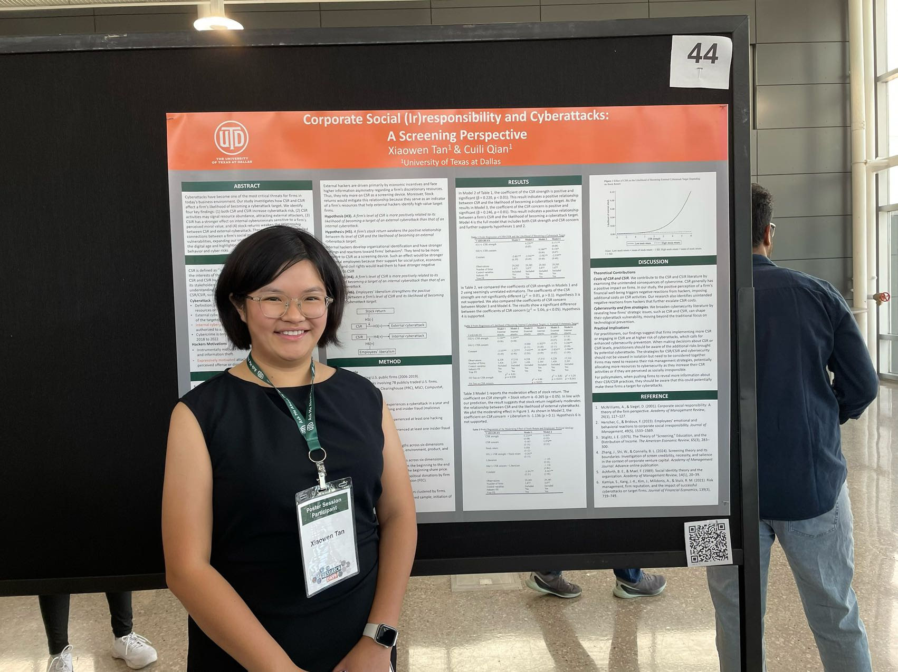
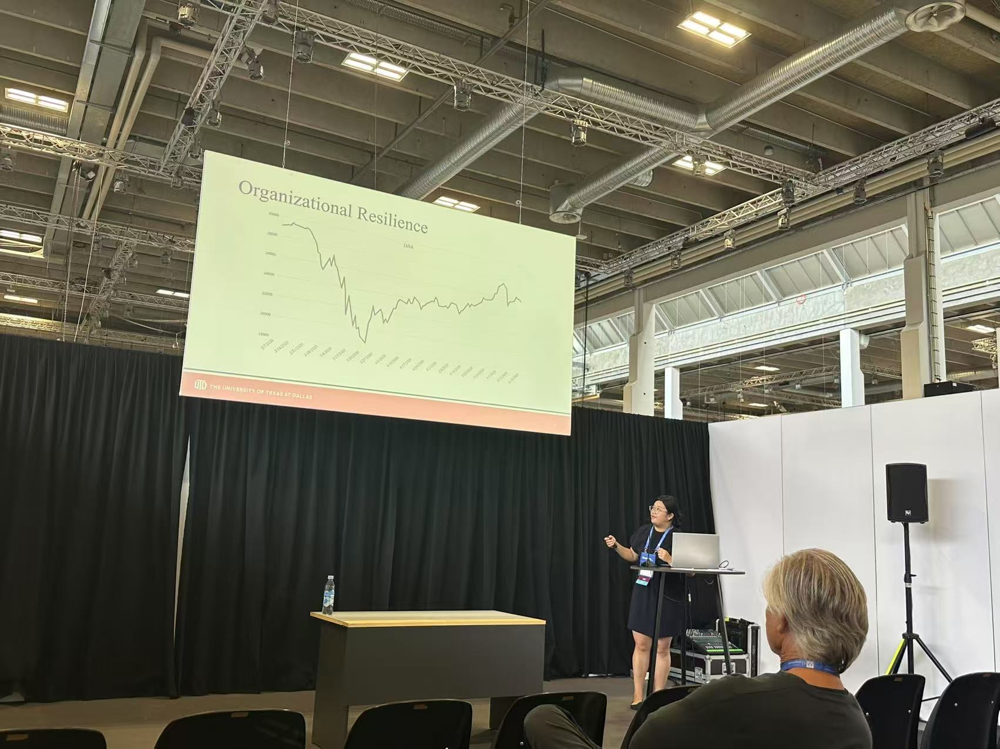

In it together: employees, firms, and the values they share.
I am a fourth-year strategy PhD student at The University of Texas at Dallas. My research explores
how social values carried by social movements, firm initiatives, and culture shape
employees' attitudes and behaviors, and how employees as agentic stakeholders impact
organizations.
From the Streets to the Firm: Feminist Social Protests and Male Employee Turnover Decisions
Tan, X., Qian, C., & Takeuchi, R.
Under review — Academy of Management Journal
This study examines how feminist protests influence employee turnover in organizations. Based on the integration of stakeholder theory and social information processing theory, we argue that large-scale feminist protests send social information that values gender equality. This raises employees’ (male in particular) awareness of gender inequality in the workplace, which prompts employees to leave their firm that misalign with the social information, leading to a higher turnover rate. Using the context of Women’s March protests from 2017 to 2022 and employee turnover records from online professional profiles, we show that the scale of feminist protests in the local community where a firm is headquartered increases the firm’s male employee turnover rate. We further argue that the influence of feminist protests on male employees’ turnover rate depends on the degree of value alignment between a firm and the protests: the influence of protests is mitigated for firms with a more female-friendly environment, and better employee treatment (i.e., firms with positive media coverage and fewer safety violations). Our findings contribute to research on social movements by identifying employee turnover as a new mechanism through which social movements can reshape an organization’s workforce, moving beyond external institutional pressure on which literature has mainly focused.
Who Gets Cyberattacks? From the Perspective of Corporate Social (Ir)Responsibility
Tan, X. & Qian, C.
Under review — Journal of Management
★ Best Paper — 85th AOM Annual Meeting, Copenhagen, Jul 2025★ Finalist, SMS Best Student Paper — San Francisco, Oct 2025
This study investigates how cybercriminals, as unconventional audiences, react to firms’ corpo-rate social responsibility (CSR) and corporate social irresponsibility (CSIR). Building on screening theory and criminal motivation literature, we develop arguments that instrumentally motivated cybercriminals use CSR as a signal of firms’ capability and willingness to pay to identify targets with higher potential gains, while expressively motivated hackers use CSIR as an indicator of moral value deficiency to select justifiable targets. We further articulate that ex-ternal cybercriminals, driven by instrumental motivations, rely more on CSR for resource screening, while internal cybercriminals, led by expressive motivations, depend more on CSIR. Using data on cyberattacks targeting U.S. public firms during 2006-2019, we find that CSR and CSIR increase firms’ likelihood of becoming targets of cyberattacks. CSIR has stronger effects on internal cyberattacks compared to external ones, and stock return weakens CSR’s impact on external cyberattacks. Our findings show how CSR and CSIR signals can generate unintended consequences for firms from audiences beyond traditional stakeholders and contribute to cyberattack research by identifying important organizational antecedents of attack targeting.

Work in Progress
When Adversity Strikes: Strategic Attention and Organizational Resilience During Crisis
Tan, X., Qian, C., & Li, A.N.
Writing — Target: Academy of Management Journal
★ Nomination, SMS Best Student Paper — Berlin, Oct 2026
We investigate the impact of attention allocation on organizational resilience in the context of a crisis. Drawing on attention-based view and organizational resilience literature, we examine how the strategic attention breadth of top management teams (TMTs) impacts firms' stock price performance during the COVID-19 pandemic. In the face of a crisis, organizations experience an initial period of disruption marked by a sharp performance drop, followed by a recovery phase in which performance begins to stabilize and improve. We theorize that broad attention allocation worsens initial stock price declines while improving recovery. To provide further evidence, we identify TMT task-related faultlines and product diversification as moderators that intensify both the negative effect of TMT attention breadth during the crisis onset and its positive effect during recovery. Analyzing 1,960 U.S. public firms with 25,131 TMT members, we find strong support for our hypotheses. This study advances understanding of how TMT attention allocation shapes organizational resilience across different crisis stages and highlights the critical role of information complexity in moderating attention effects. Our findings show that optimal attention breadth is temporally contingent, offering important implications for crisis management theory and practice.

Organizational Culture and Employee Whistleblowing
Tan, X. & Qian, C.
Writing and model adjustment
This study examines how organizational culture influences employee whistleblowing. Based on an integration of stakeholder governance theory and organizational culture research, we argue that organizational culture clarify normative boundary of wrongdoing and lead em-ployees to internalize reporting as an act of stakeholder duty, leading more whistleblowing. Us-ing establishment-level employee whistleblowing on health and safety issues from 2003 to 2022 with machine-learning derived culture scores, we show that clear organizational culture in-creases employee whistleblowing. We further argue that culture's influence on whistleblowing depends on the broader governance environment: the influence of culture is amplified for firms with higher board independence, Big 4 audits, higher cultural tightness in establishment states. Our findings contribute to the stakeholder governance conversation by identifying organization-al culture as a critical yet underexplored mechanism through which activates employees’ bot-tom-up governance of firm behavior.
The Unintended Consequences of Stakeholder Management: A Systematic Review
Qian, C., Tan, X., Liu, Y., & Crilly, D.
Writing — Target: Journal of Management
Stakeholder research has made significant progress over the past decades, with a grow-ing interest in the unintended consequences of stakeholder management, situations where a firm’s actions targeted at the stakeholder group(s) trigger opposite reactions or reactions from other non-targeted stakeholder groups. Despite many studies documenting the unintended con-sequences caused by stakeholder management, the literature lacks a comprehensive framework that spans across different disciplines. Through a systematic literature review and summary of research on unintended consequences of stakeholder management, we aim to reveal (1) the channels through which unintended consequences happen (within-stakeholder groups and/or cross-stakeholder groups), (2) the types of unintended consequences (desirable vs. undesirable), (3) the mechanisms through which firms’ actions lead to unintended stakeholders’ reactions, and (4) boundary conditions of the impact of firms’ stakeholder management on unintended conse-quences. Based on the systematic review of the current research in this area, we provide a roadmap for future research to extend knowledge in the relationship between firm-stakeholder relations and unintended consequences.
Paying Less to Get More: The Impact of Training Costs on Firms' Hiring Strategies
Qian, C., Tan, X., Song, X., & Xia, X.
Writing and model adjustment
Research has studied hiring and training as two sequential stages of human capital de-velopment and emphasized the benefits of education on later training. However, for firms, these two stages involve a trade-off in "make” or “buy" decisions for human capital. We investigate how changes in training costs affect firms’ hiring decisions on employees’ education level. Lev-eraging the quasi-exogenous reform of the 2015 tax incentive for high-tech firms’ training in China, we find that high-tech firms hire higher numbers of low-educated employees in response to cost reduction in training. Firms use training to replace hiring high-educated employees to achieve satisfying human capital. The effect is stronger for firms needing more production workers, in the growth stage, and located in regions with lower minimum wages. Our findings suggest that training could substitute formal education and create opportunities for low-educated workers.
Product Recall and Employee Reaction
Wu, J., Jiang, N., Qian, C., & Tan, X.
Data analysis
Conference Proceedings
Corporate Social (Ir)Responsibility and Cyberattacks: A Screening Perspective
Tan, X. & Qian, C.
Academy of Management Proceedings, Vol. 2025, No. 1, p. 12706. Academy of Management.